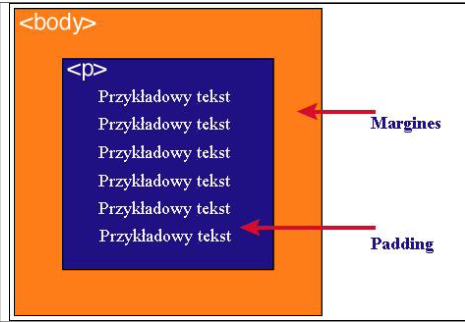

| zawartość | opis |
| "content" | zawartość elementu (np.: tekst.obrazek) |
| "padding" | otaczające marginesy wewnętrzne, odstęp między obramowaniem i zawartością elementu |
| "border" | obramowania wokół zawartości elementu, ma styl i kolor |
| "margin" | marginesy wokół ramki (margines zewnętrzny). Jest to pusty obszar wokół ramki, który nie ma koloru tła i jest przeźroczysty. |
Padding określa przestrzeń wokół danego elementu, np:
lub >div>, natomiast margines przestrzeń pomiędzy elementami
Jak widać na rysunku, padding oznaczony jest kolorem niebieskim. Określa on wielkość przestrzeni wokół elementu <p>. Element ten posiada również margines zaznaczony kolorem pomarańczowym. Jest to odległość od brzegu elementu .</p>